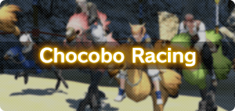

Chocobo racing is an exciting competition at the Gold Saucer that makes use of specially trained chocobos. From improving their abilities through rigorous training to breeding retired chocobos for their traits, you can raise the champion chocobo you've always wanted.
Requirements
So You Think You Can Ride This Chocobo

- Level 15
- Central Shroud (X:20.4 Y:22.8)
- Katering
- Players must first complete the quest “So You Want to Be a Jockey."
 Visiting the Gold Saucer
Visiting the Gold Saucer
Where to Participate
To acquire a racing chocobo, register your chocobo, and begin racing, players must first proceed to Chocobo Square by speaking with the lift operator Saethrith at the Entrance Square (X:4.4 Y:6.7).

Preparing for Chocobo Racing
How to Obtain a Registration Form
After completing the prerequisite quest, players can register their racing chocobo. Over the course of the quest, players will receive either Fledgling Chocobo Registration G1-M or Fledgling Chocobo Registration G1-F depending on the preferred gender of their chocobo.
* In the event you accidentally discard your registration form, or wish to acquire a new racing chocobo, a new registration form can be purchased from the Feathertrader NPC at Bentbranch Meadows in Central Shroud (X:20.4 Y:22.8).